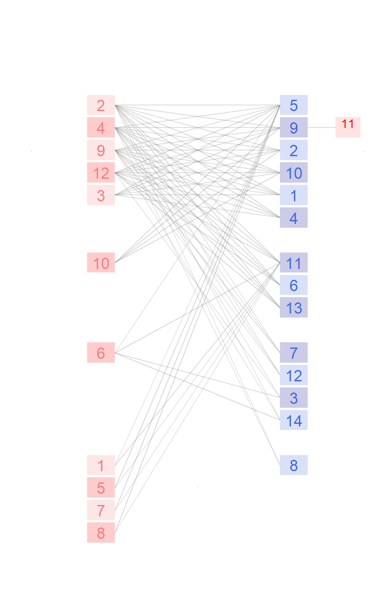

Network: RA_HP_048

Host 1 Amalaraeus.penicilliger, 2 Amphipsylla.rossica, 3 Corrodopsylla.birulai, 4 Ctenophthalmus.breviatus, 5 Ctenophthalmus.wagneri, 6 Hystrichopsylla.talpae, 7 Leptopsylla.segnis, 8 Leptopsylla.taschenbergi, 9 Megabothris.turbidus, 10 Megabothris.walkeri, 11 Nosopsyllus.consimilis, 12 Nosopsyllus.mokrzeckyi, 13 Palaeopsylla.soricis, 14Peromyscopsylla.bidentata
Parasite
1 Allocricetulus eversmanni, 2 Apodemus uralensis, 3 Arvicola terrestris, 4 Clethrionomys glareolus, 5 Cricetus cricetus, 6 Crocidura suaveolens, 7 Lagurus lagurus, 8 Micromys minutus, 9 Microtus arvalis, 10 Microtus oeconomus, 11 Sicista subtilis, 12Sorex araneus
Hadfield JD, Krasnov BR, Poulin R, Shinichi N (2013) A tale of two phylogenies: comparative analyses of ecological interactions. The American Naturalist 183(2): 174-187 Ural Valley